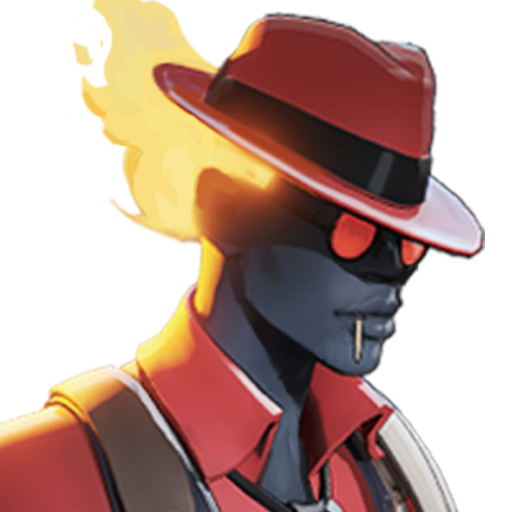
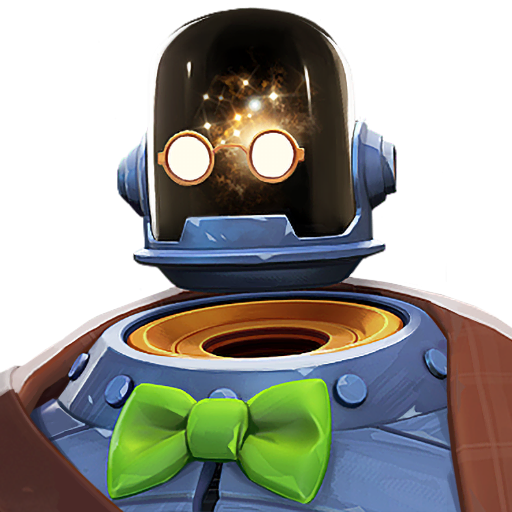
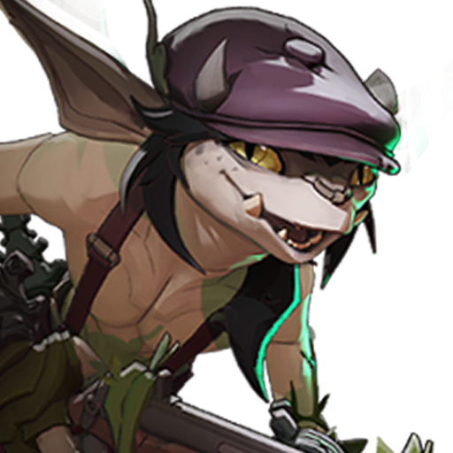

A quick introduction to Deadlock: third-person combat meets the decisions, growth and shared objectives of a team strategy game.
Read the space, track your target and use your hero’s tools.
What you buy, where you go and when you group all shape the match.
Heroes bring distinct tools and personalities. Start with a style you enjoy, then learn the rhythm of that character.



Learn the feel of your abilities before chasing a perfect build.
A good moment can be a save, a setup or a well-chosen rotation.
Souls fuel your progression. Use them to buy items and develop your hero as the match changes.
Choose upgrades that support your hero and the situation in front of you.
An item is part of a plan. Revisit that plan as threats and opportunities change.
Conceptual progression diagram. Item values and balance change during development.
The city is part of the contest. Routes, timing and nearby teammates can matter as much as the next shot.
Know where help can come from and where you can leave.
Use movement to reach an opportunity, support an ally or reset.
Illustrative route diagram, not a gameplay map.
You do not need to understand every system at once. Begin with a few repeatable habits and build from there.
Explore the tools and learn what each ability is for.
Notice health, stamina and opportunities to spend souls.
Follow up on a useful opening and make your intentions clear.
Connect your fighting and movement to the shared goal.
Deadlock is in early development. Access is currently through invitations from existing playtesters. Check the official Steam page for the current status.